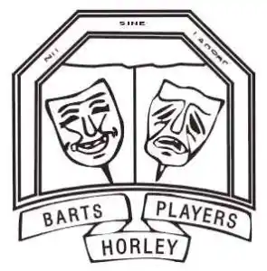

Life Before The Archway
The late Reg Wescott, a teacher at Horley Central School, started a drama class at the evening institute in September 1939. This was attended by some of the pupils and former pupils so that when in the spring of 1940 the class decided to put on a play in the school hall, they did so under the name of “Central Players”.
The play was “Laburnum Grove” by J.B.Priestley. During the wartime, the railway arches had been turned into temporary accommodation for Civil Defence purposes, and after the war some were being used as a Community Centre. By 1952, the Horley Central Players were storing their equipment and rehearsing in one of the arches, rented from the Community Centre, but still putting on productions in local halls.
There was much concern about paying rents from projected income, and a Committee was set up to consider ways of raising the money required. The Committee Chairman was Arthur Clermont, and he and John Dilly (who later left the area to become a TV set designer) came up with plans to form a theatre within the arches.
Thus the Archway Theatre was founded. The Company was incorporated as Horley Central Players Limited in 1956, and took over the tenancy of five of the arches. Some arches were sub-let originally from the Community Centre, but in 1956 our lease was from the railway company (who is still the landlord). The auditorium and stage occupied what was originally a games arch; it continues to accommodate our audience today.
 The late Walter Treagus was interested in amateur dramatics, and in 1951 formed a group from the Youth Club and Choir members of St. Bartholomew’s Church. They called themselves the “Barts Players” and also put on productions in local halls. Their first show was a musical, “Rob of the Forest”. In time, some people belonged to both Companies: others were members of just one. There was a friendly rivalry which doubtless helped to raise the standards of each. By 1957, Barts were ready and anxious to present “The Winslow Boy” by Terence Rattigan in the Archway premises, which they did. It was not long before the Barts Players were also being accommodated in one of the arches. What is our Rehearsal Arch is still referred to as Barts Arch by many of the older members!
By the late 1970s both Companies were making an equal contribution to the play programme of the Theatre, alternating performances. Barts always put on the pantomime. In time a new lease was required, and it became clear that the two companies should combine. After much discussion they did and the Archway Theatre Company was formed. A long lease was granted in 1988, and the arches were professionally converted to the theatre you see today.
Read more of our history with some lovely stories written by Bette Bunkell